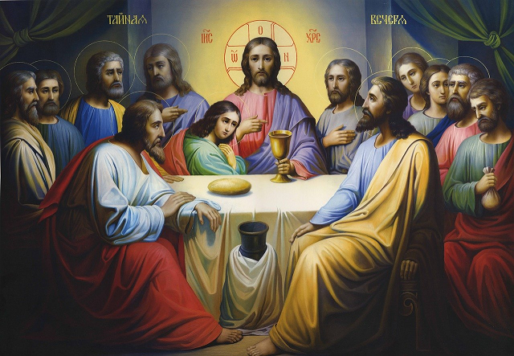
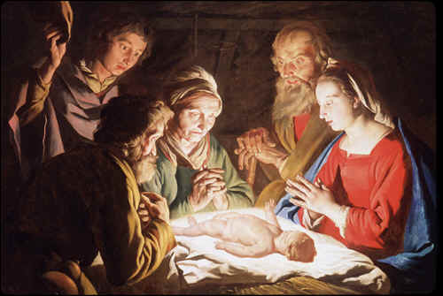
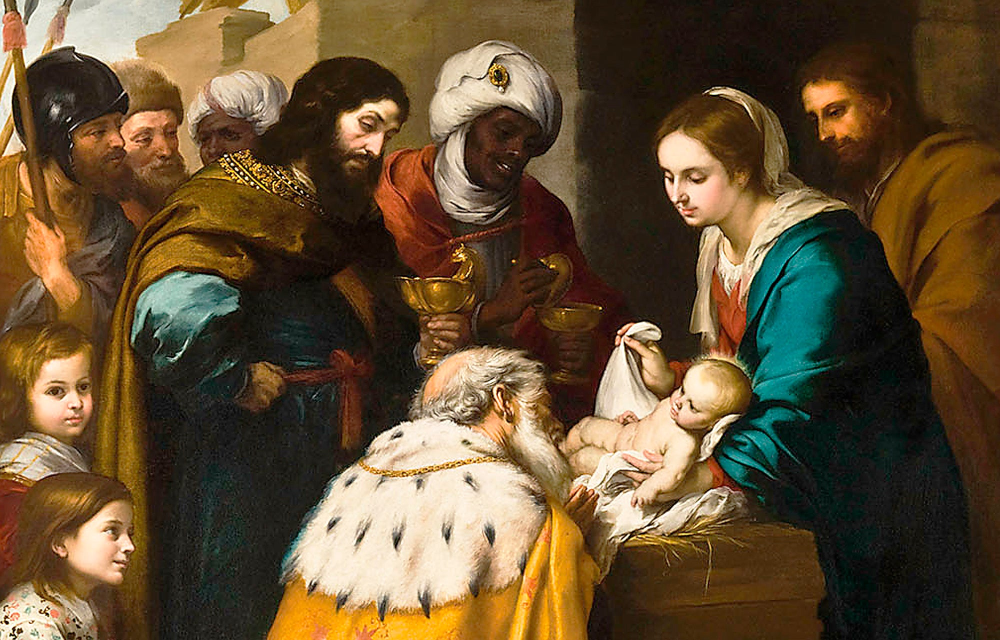
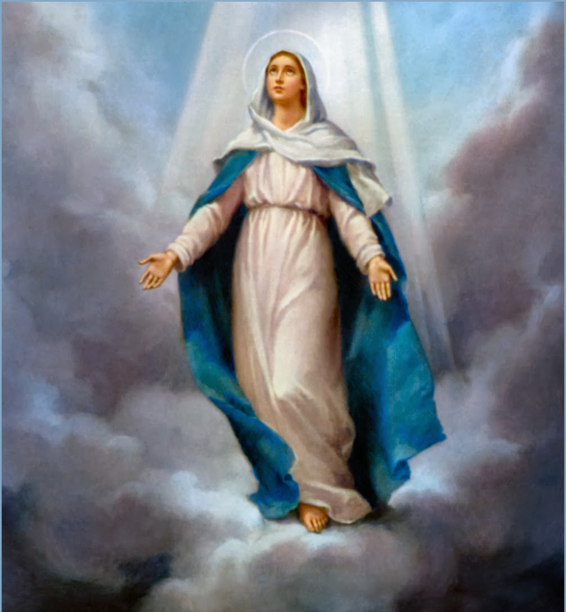
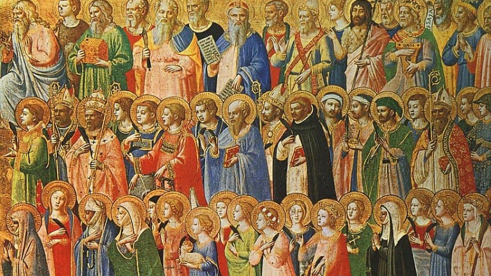
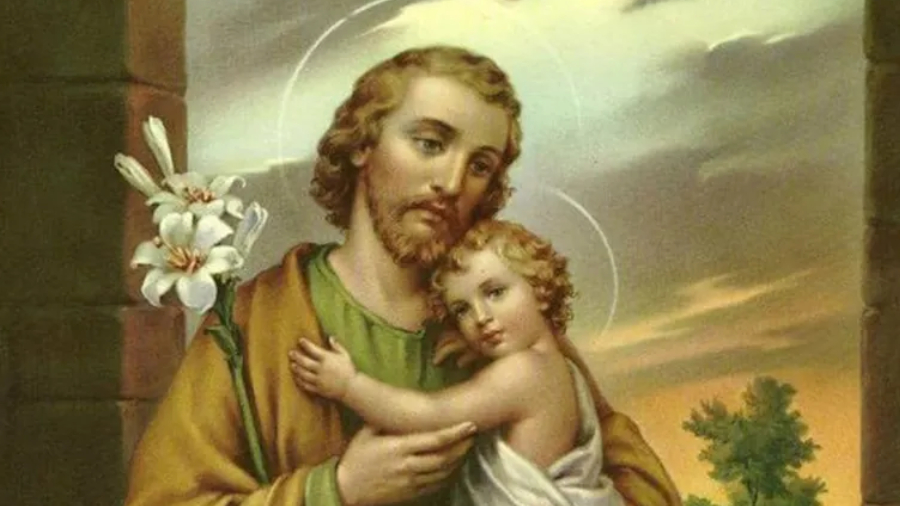

nuestras fiestas
pascua:
La Pascua católica conmemora la resurrección de Jesucristo , la culminación de la Semana Santa, que ocurre el domingo después del primer plenilunio tras el 20 de marzo. Su origen se vincula a la la liberación de la esclavitud en Egipto y fue fijada por el Concilio de Nicea en el 325 dC. para ser celebrado en domingo, un día de gran significado para los cristianos.
la navidad:
La Navidad en la religión católica. la conmemoración del nacimiento de Jesucristo, celebrada el 25 de diciembre desde el siglo III o IV dC, aunque los evangelios no especifican la fecha exacta. La Iglesia adoptó esta fecha para reemplazar festividades paganas romanas del solsticio de invierno, como la del Sol Invictus , buscando cristianizar las costumbres y dar a los fieles un nuevo motivo de celebración en el mes de diciembre. Esta festividad, cuyo nombre proviene del latín nativitas, se celebra con la Nochebuena (24 de diciembre) y, desde el siglo VI, con la Epifanía el 6 de enero, que conmemora la adoración de los Reyes Magos.
Epifanía:
La historia de la Epifanía en la Iglesia Católica se centra en la "manifestación" de Jesús, especialmente a través de la adoración de los Reyes Magos al Niño Jesús, un evento que simboliza la revelación de Cristo a todas las naciones.. Aunque la fiesta de Reyes del 6 de enero es la más conocida, la Epifanía también celebra el bautismo de Jesús en el Jordán y el milagro de las bodas de Caná, momentos clave en que Jesús se da a conocer al mundo como el Hijo de Dios y Salvador universal
ascensión del señor:
La historia de la Ascensión del Señor en la religión católica. narra el momento en que Jesús, tras Su resurrección y tras dar instrucciones a Sus discípulos, fue elevado básicamente al cielo, ocultándose de su vista mientras una nube lo recibía, y sentándose a la derecha de Dios, marcando el fin de Su misión terrestre y Su entrada definitiva en la gloria celestial.. Este acontecimiento, celebrado 40 días después de Pascua, es el cumplimiento de Su vida y un signo de la glorificación de la humanidad, además de la promesa de que los creyentes también serán llamados a esa gloria.

pentecostes:
En la religión católica, la historia de Pentecostés, celebrada 50 días después de Pascua, narra la venida del Espíritu Santo sobre los Apóstoles reunidos en el Cenáculo. Este evento, descrito en el libro de los Hechos de los Apóstoles, marcó el nacimiento de la Iglesia cristiana al dotar a los discípulos de los dones necesarios para difundir el Evangelio, y culmina el tiempo pascual para dar paso al tiempo ordinario.
.jpg)
Corpus Christi:
La fiesta del Corpus Christi tiene su origen en el siglo XIII en Bélgica, donde Santa Juliana de Mont Cornillon tuvo visiones de la necesidad de una fiesta para adorar el cuerpo de Cristo presente en la Eucaristía.. El Papa Urbano IV oficializó la solemnidad para toda la Iglesia en 1264, y más tarde el Papa Juan XXII la restauró en 1317. La celebración tiene como propósito la veneración pública del sacramento de la Eucaristía, con procesiones donde se lleva la hostia consagrada por las calles para manifestar la fe y la presencia de Cristo en el mundo.

solemnidad de la santa maria , madre de dios:
La Solemnidad de Santa María, Madre de Dios, se celebra el 1 de enero y Tiene orígenes en el siglo VI en Roma, como una de las primeras fiestas marianas en Occidente.. Se fundamenta en la proclamación del título Theotokos (Madre de Dios) en el Concilio de Éfeso (431 dC) para defender la naturaleza de Cristo y afirmar que María, al ser madre del Verbo encarnado, es también madre de Dios. La celebración es una forma de honrar su papel fundamental en la historia de la salvación y para pedir su intercesión en el nuevo año.

solemnidad de la asuncion de la virgen :
La historia de la Solemnidad de la Asunciónse remonta a los primeros siglos del cristianismo, con celebraciones que conmemoran el cuerpo y alma de la Virgen María llevadas al cielo, lo cual se remonta al siglo V en la liturgia oriental como la "Dormición" y fue adoptado por la Iglesia Latina en el siglo VII. En 1950, el Papa Pío XII proclamó formalmente la Asunción de María como dogma de fe mediante la Constitución Apostólica Munificentissimus Deus, aunque la creencia en este acontecimiento ya era una tradición fuerte en la Iglesia desde el siglo XII con el tratado "Ad Interrogata" atribuido a san Agustín y reforzado por teólogos posteriores.
solemnidad para todos los santos :
La Solemnidad de Todos los Santos se originó en el siglo IV en Oriente y luego se expandió a la Iglesia, comenzando como una celebración conjunta de mártires por la imposibilidad de ellos conmemorar todos individualmente.. En el año 610, el Papa Bonifacio IV dedicó el Panteón de Roma al culto cristiano, fijando la fecha en el 13 de mayo. Más tarde, en el siglo IX, el Papa Gregorio IV trasladó la fiesta al 1 de noviembre, consolidándola en toda la Iglesia como una solemnidad para honrar a todos los santos, tanto canonizados como aquellos que ya gozan de la gloria de Dios.
san jose:
San José es una figura central en el catolicismo como esposo de la Virgen María y padre adoptivo de Jesús, recordado por su fe, obediencia y humildad como carpintero de Nazaret. Aunque los evangelios no lo citan, su papel es crucial en la Natividad y en la genealogía mesiánica de Jesús, quien recibió la ascendencia davídica a través de José. La devoción a San José creció desde el siglo XIV, impulsada por líderes como Santa Teresa de Jesús y los papas Pío IX y Pío XII, quien lo proclamó patrón de los trabajadores.
